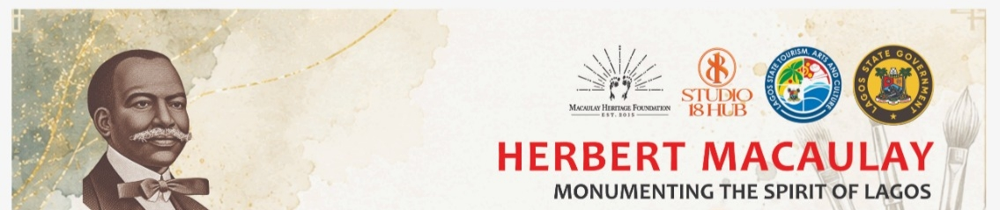

An artistic interpretation of Herbert Macaulay's vision for Nigeria today. A nation is not a finished creation. It is an ongoing project, shaped by the dreams, struggles, sacrifices and contributions of successive generations. Its identity is not defined solely by its history, but also by what its people choose to build upon that history. This work explores Nigeria as an unfinished project, drawing inspiration from the historical contributions and legacy of Herbert Macaulay. It considers the idea that the aspirations of those who came before us should not end with their departure. Rather, their contributions should become foundations upon which subsequent generations continue to build a greater nation. At the heart of this concept is the understanding that nation-building is a continuous responsibility. Every generation inherits something from the preceding one: a foundation, a vision, a responsibility and, sometimes, an unfinished task. The responsibility of the present generation is not merely to occupy the nation it has inherited, but to contribute meaningfully to its completion. In doing so, we give continuing significance to the efforts and aspirations of those who laid its foundations.
The use of Minecraft, a game centred on building, assembling and creating structures from individual blocks, serves as the principal visual language of this work. In Minecraft, monumental structures are not created in a single moment. They emerge through the deliberate placement and combination of individual blocks. Each block contributes to the stability, appearance and identity of the final structure. A missing block can leave an incomplete section, while the thoughtful arrangement of many individual blocks can produce something remarkable. This becomes an artistic metaphor for nation-building. Nigeria, like a structure under construction, requires the collective contributions of its people. Every generation adds its own blocks to the foundation inherited from the past. These blocks represent knowledge, creativity, culture, integrity, responsibility, innovation and collective effort. No single individual or generation can independently complete the project. The greatness of the nation emerges through the continuous contributions of many. The Minecraft aesthetic therefore goes beyond a visual reference to a popular game. It communicates a philosophy: a great nation is built, block by block, generation after generation.
Another important element of the work is the use of QR codes as a representation of Nigeria's evolving national identity. A QR code is composed of carefully arranged patterns that work together to communicate information. In this artwork, its construction becomes a metaphor for the formation of a nation. Individual portions of the code represent different contributions, identities, communities and generations. Viewed separately, these portions do not reveal the complete identity or message of the intended code. It is through their proper arrangement and coming together that the complete pattern emerges and becomes recognisable. This represents a nation that has not yet fully realised its collective identity because its construction remains unfinished. Nigeria's identity, in this interpretation, is something that emerges through the coming together of its people and their contributions. The completed QR code therefore represents more than a technological symbol. It represents the possibility of a nation discovering and recognising its collective identity through unity, cooperation and the fulfilment of its unfinished project.
Ultimately, this work is a reflection on inheritance and responsibility. Herbert Macaulay belongs to a generation whose contributions form part of Nigeria's historical foundation. However, the meaning of a legacy is not confined to remembrance. It also lives in what succeeding generations do with what they have inherited. The unfinished structure is therefore not simply a representation of what Nigeria has failed to become; it is also an invitation to participate in what Nigeria can become. We are the builders of the generation that follows us. The blocks we contribute today become part of the foundation upon which tomorrow's generation will build. The project remains unfinished, the vision remains in progress, and the responsibility of construction belongs to us all. A nation is not completed by remembering those who envisioned it. It is completed by continuing the work they began.